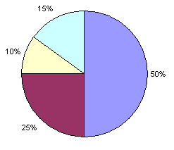
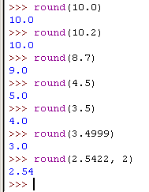
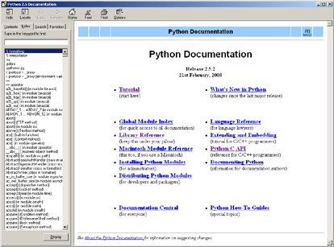

The Reversi AI algorithm was very simple, but it beats me almost every time I play it. This is because the computer can process instructions very fast, so checking each possible position on the board and selecting the highest scoring move is easy. If I took the time to look at every space on the board and write down the score of each possible move, it would take a long time for me to find the best move.
Did you notice that our Reversi program in Chapter 11 had two functions, getPlayerMove() and getComputerMove(), which both returned the move selected as a two-item list like [x, y]? The both also had the same parameters, the game board data structure and which tile they were. getPlayerMove() decided which [x, y] move to return by letting the player type in the coordinates. getComputerMove() decided which [x, y] move to return by running the Reversi AI algorithm.
What happens when we replace the call to getPlayerMove() with a call to getComputerMove()? Then the player never types in a move, it is decided for them! The computer is playing against itself!
Save the old reversi.py file as AISim1.py by clicking on File and then Save As, and then entering AISim1.py for the file name and clicking Ok. This will create a copy of our Reversi source code as a new file that we can make changes to, while leaving the original Reversi game the same (we may want to play it again). Change the following code in AISim1.py:
- move = getPlayerMove(mainBoard, playerTile)
To this (the change is in bold):
- move = getComputerMove(mainBoard, playerTile)
And run the program. Notice that the game still asks you if you want to be X or O, but it will not ask you to enter in any moves. When we replaced getPlayerMove(), we no longer call any code that takes this input from the player. We still press Enter after the original computer's moves (because of the raw_input('Press Enter to see the computer\'s move.') on line 285), but the game plays itself!
Let's make some other changes. All of the functions we defined for Reversi can stay the same. But change the entire main section of the program (line 246 and on) to look like the following:
AISim1.py
- print 'Welcome to Reversi!'
- while True:
- # Reset the board and game.
- mainBoard = getNewBoard()
- resetBoard(mainBoard)
- if whoGoesFirst() == 'player':
- turn = 'X'
- else:
- turn = 'O'
- print 'The ' + turn + ' will go first.'
- while True:
- drawBoard(mainBoard)
- scores = getScoreOfBoard(mainBoard)
- print 'X has %s points. O has %s points' % (scores['X'], scores['O'])
- raw_input('Press Enter to continue.')
- if turn == 'X':
- # X's turn.
- otherTile = 'O'
- x, y = getComputerMove(mainBoard, 'X')
- makeMove(mainBoard, 'X', x, y)
- else:
- # O's turn.
- otherTile = 'X'
- x, y = getComputerMove(mainBoard, 'O')
- makeMove(mainBoard, 'O', x, y)
- if getValidMoves(mainBoard, otherTile) == []:
- break
- else:
- turn = otherTile
- # Display the final score.
- drawBoard(mainBoard)
- scores = getScoreOfBoard(mainBoard)
- print 'X scored %s points. O scored %s points.' % (scores['X'], scores['O'])
- if not playAgain():
- sys.exit()
When you run the AISim1.py program, all you can do is press Enter for each turn until the game ends. Run through a few games and watch the computer play itself. Since both the X and O players are using the same algorithm, it really is just a matter of luck to see who wins. The X player will win half the time, and the O player will win half the time.
But what if we created a new algorithm? Then we could set this new AI against the one implemented in getComputerMove(), and see which one is better. Let's make some changes to our program. Click on File and then Save As, and save this file as AISim2.py so that we can make changes without affecting AISim1.py.
Add the following code. The additions are in bold, and some lines have been removed:
AISim2.py
- print 'Welcome to Reversi!'
- xwins = 0
- owins = 0
- ties = 0
- numGames = int(raw_input('Enter number of games to run: '))
- for game in range(numGames):
- print 'Game #%s:' % (game),
- # Reset the board and game.
- mainBoard = getNewBoard()
- resetBoard(mainBoard)
- if whoGoesFirst() == 'player':
- turn = 'X'
- else:
- turn = 'O'
- while True:
- if turn == 'X':
- # X's turn.
- otherTile = 'O'
- x, y = getComputerMove(mainBoard, 'X')
- makeMove(mainBoard, 'X', x, y)
- else:
- # O's turn.
- otherTile = 'X'
- x, y = getComputerMove(mainBoard, 'O')
- makeMove(mainBoard, 'O', x, y)
- if getValidMoves(mainBoard, otherTile) == []:
- break
- else:
- turn = otherTile
- # Display the final score.
- scores = getScoreOfBoard(mainBoard)
- print 'X scored %s points. O scored %s points.' % (scores['X'], scores['O'])
- if scores['X'] > scores['O']:
- xwins += 1
- elif scores['X'] < scores['O']:
- owins += 1
- else:
- ties += 1
- numGames = float(numGames)
- xpercent = round(((xwins / numGames) * 100), 2)
- opercent = round(((owins / numGames) * 100), 2)
- tiepercent = round(((ties / numGames) * 100), 2)
- print 'X wins %s games (%s%%), O wins %s games (%s%%), ties for %s games (%s%%) of %s games total.' % (xwins, xpercent, owins, opercent, ties, tiepercent, numGames)
We have added the variables xwins, owins, and ties to keep track of how many times X wins, O wins, and when they tie. Lines 284 to 289 increment these variables at the end of each game, before it loops back to start a brand new game.
We have removed most of the print statements from the program, and the calls to drawBoard(). When you run AISim2.py, it asks you how many games you wish to run. Now that we've taken out the call to drawBoard() and replace the while True: loop with a for game in range(numGames): loop, we can run a number of games without stopping for the user to type anything. Here is a sample run where we run ten games of computer vs. computer Reversi:
Welcome to Reversi!
Enter number of games to run: 10
Game #0: X scored 40 points. O scored 23 points.
Game #1: X scored 24 points. O scored 39 points.
Game #2: X scored 31 points. O scored 30 points.
Game #3: X scored 41 points. O scored 23 points.
Game #4: X scored 30 points. O scored 34 points.
Game #5: X scored 37 points. O scored 27 points.
Game #6: X scored 29 points. O scored 33 points.
Game #7: X scored 31 points. O scored 33 points.
Game #8: X scored 32 points. O scored 32 points.
Game #9: X scored 41 points. O scored 22 points.
X wins 5 games (50.0%), O wins 4 games (40.0%), ties for 1 games (10.0%) of 10.0 games total.
Because the algorithm does have a random part, your run might not have the exact same numbers as above.
Printing things out to the screen slows the computer down, but now that we have removed that code, the computer can run an entire game of Reversi in about a second or two. Think about it. Each time our program printed out one of those lines, it ran through an entire game (which is about fifty or sixty moves, each move carefully checked to be the one that gets the most points).
Percentages are a portion of a total amount, and range from 0% to 100%. If you had 100% of a pie, you would have the entire pie. If you had 0% of a pie, you wouldn't have any pie at all. 50% of the pie would be half of the pie. A pie is a common image to use for percentages. In fact, there is a kind of chart called a pie chart which shows how much of the full total a certain portion is. Here is a pie chart with 10%, 15%, 25%, and 50% portions:

We can calculate the percentage with division. To get a percentage, divide the part you have by the total, and then multiply by one hundred. For example, if X won 50 out of 100 games, you would calculate the expression 50 / 100.0, which would evaluate to 0.5. We multiple this by 100 to get a percentage (in this case, 50%).
Did you notice that we divided 50 / 100.0, not 50 / 100? The reason behind this is that there are two types of division in the Python language. Regular division is done when at least one of the numbers in the division expression is a float data type, that is, a number that has a decimal point and then a certain fraction after it. Regular division will evaluate to another float value. (For example, 50 / 100.0 evaluates to 0.5.)
However, if both numbers in the division expression are integers (that is, whole numbers without a decimal point), then Python will do integer division. Integer division is division of two integer numbers that evaluate to a rounded-down integer.
For example, the expression 20 / 3.0 or the expression 20.0 / 3 will evaluate to 6.666666666666667. However, the expression 20 / 3 evaluates to the integer 6. This is because twenty divided by three is six, with a remainder of two. In integer division, the remainder part is dropped.
We want to use regular division when we calculate our percentages, because otherwise instead of a float value like 0.5, integer division for percentages will always evaluate to 0.
The round() function will round a float number to the nearest whole float number. Try typing the following into the interactive shell:
round(10.0)
round(10.2)
round(8.7)
round(4.5)
round(3.5)
round(3.4999)
round(2.5422, 2)

As you can see, whenever the fraction part of a number is .5 or greater, the number is rounded up. Otherwise, the number is rounded down. The round() function also has an optional parameter, where you can specify to what place you wish to round the number to. For example, the expression round(2.5422, 2) evaluates to 2.54.
- numGames = float(numGames)
- xpercent = round(((xwins / numGames) * 100), 2)
- opercent = round(((owins / numGames) * 100), 2)
- tiepercent = round(((ties / numGames) * 100), 2)
- print 'X wins %s games (%s%%), O wins %s games (%s%%), ties for %s games (%s%%) of %s games total.' % (xwins, xpercent, owins, opercent, ties, tiepercent, numGames)
The code at the bottom of our program will show the user how many wins X and O had, how many ties there were, and how what percentages these make up. Statistically, the more games you run, the more accurate your percentages will be. If you only ran ten games, and X won three of them, then it would seem that X's algorithm only wins 30% of the time. However, if you run a hundred, or even a thousand games, then you may find that X's algorithm wins closer to 50% (that is, half) of the games.
To find the percentages, we divide the number of wins or ties by the total number of games. We convert numGames to a float to ensure we do not use integer division in our calculation. Then we multiple the result by 100. However, we may end up with a number like 66.66666666666667. So we pass this number to the round() function with the second parameter of 2), so it will return a float like 66.67 instead (which is much more readable).
Let's try another experiment. Run AISim2.py again, but this time have it run a hundred games:
Welcome to Reversi!
Enter number of games to run: 100
Game #0: X scored 42 points. O scored 18 points.
Game #1: X scored 26 points. O scored 37 points.
Game #2: X scored 34 points. O scored 29 points.
Game #3: X scored 40 points. O scored 24 points.
...skipped for brevity...
Game #96: X scored 22 points. O scored 39 points.
Game #97: X scored 38 points. O scored 26 points.
Game #98: X scored 35 points. O scored 28 points.
Game #99: X scored 24 points. O scored 40 points.
X wins 46 games (46.0%), O wins 52 games (52.0%), ties for 2 games (2.0%) of 100.0 games total.
Depending on how fast your computer is, this run might have taken a about a couple minutes. We can see that the results of all one hundred games still evens out to about fifty-fifty, because both X and O are using the same algorithm to win.
Let's add some new functions with new algorithms. But first click on File, then Save As, and save this file as AISim3.py. Before the print 'Welcome to Reversi!' line, add these functions:
AISim3.py
- def getRandomMove(board, tile):
- # Return a random move.
- return random.choice( getValidMoves(board, tile) )
- def isOnSide(x, y):
- return x == 0 or x == 7 or y == 0 or y ==7
- def getCornerSideBestMove(board, tile):
- # Return a corner move, or a side move, or the best move.
- possibleMoves = getValidMoves(board, tile)
- # randomize the order of the possible moves
- random.shuffle(possibleMoves)
- # always go for a corner if available.
- for x, y in possibleMoves:
- if isOnCorner(x, y):
- return [x, y]
- # if there is no corner, return a side move.
- for x, y in possibleMoves:
- if isOnSide(x, y):
- return [x, y]
- return getComputerMove(board, tile)
- def getSideBestMove(board, tile):
- # Return a corner move, or a side move, or the best move.
- possibleMoves = getValidMoves(board, tile)
- # randomize the order of the possible moves
- random.shuffle(possibleMoves)
- # return a side move, if available
- for x, y in possibleMoves:
- if isOnSide(x, y):
- return [x, y]
- return getComputerMove(board, tile)
- def getWorstMove(board, tile):
- # Return the move that flips the least number of tiles.
- possibleMoves = getValidMoves(board, tile)
- # randomize the order of the possible moves
- random.shuffle(possibleMoves)
- # Go through all the possible moves and remember the best scoring move
- worstScore = 64
- for x, y in possibleMoves:
- dupeBoard = getBoardCopy(board)
- makeMove(dupeBoard, tile, x, y)
- score = getScoreOfBoard(dupeBoard)[tile]
- if score < worstScore:
- worstMove = [x, y]
- worstScore = score
- return worstMove
- def getCornerWorstMove(board, tile):
- # Return a corner, a space, or the move that flips the least number of tiles.
- possibleMoves = getValidMoves(board, tile)
- # randomize the order of the possible moves
- random.shuffle(possibleMoves)
- # always go for a corner if available.
- for x, y in possibleMoves:
- if isOnCorner(x, y):
- return [x, y]
- return getWorstMove(board, tile)
- print 'Welcome to Reversi!'
A lot of these functions are very similar to one another, and some of them use the new isOnSide() function. Here's a review of the new algorithms we've made:
| getRandomMove() | Randomly choose a valid move to make. |
| getCornerSideBestMove() | Take a corner move if available. If there is no corner, take a space on the side. If no sides are available, use the regular getComputerMove() algorithm. |
| getSideBestMove() | Take a side space if there is one available. If not, then use the regular getComputerMove() algorithm (side spaces are chosen before corner spaces). |
| getWorstMove() | Take the space that will result in the fewest tiles being flipped. |
| getCornerWorstMove() | Take a corner space, if available. If not, use the getWorstMove() algorithm. |
Now the only thing to do is replace one of the getComputerMove() calls in the main part of the program with one of the new functions. Then we can run several games and see how often one algorithm wins over the other. First, let's replace O's algorithm with the one in getComputerMove() with getRandomMove() on line 386:
- x, y = getRandomMove(mainBoard, 'O')
When we run the program with a hundred games now, it may look something like this:
Welcome to Reversi!
Enter number of games to run: 100
Game #0: X scored 25 points. O scored 38 points.
Game #1: X scored 32 points. O scored 32 points.
Game #2: X scored 15 points. O scored 0 points.
Game #3: X scored 50 points. O scored 14 points.
...skipped for brevity...
Game #96: X scored 31 points. O scored 33 points.
Game #97: X scored 41 points. O scored 23 points.
Game #98: X scored 33 points. O scored 31 points.
Game #99: X scored 45 points. O scored 19 points.
X wins 84 games (84.0%), O wins 15 games (15.0%), ties for 1 games (1.0%) of 100.0 games total.
Wow! X win far more often than O did. That means that the algorithm in getComputerMove() (take any available corners, otherwise take the space that flips the most tiles) wins more games than the algorithm in getRandomMove() (which just makes moves randomly). This makes sense, because making intelligent choices is usually going to be better than just choosing things at random.
What if we changed X's algorithm to also use the algorithm in getRandomMove()? Let's find out by changing X's function call from getComputerMove() to getRandomMove() and running the program again.
Welcome to Reversi!
Enter number of games to run: 100
Game #0: X scored 37 points. O scored 24 points.
Game #1: X scored 19 points. O scored 45 points.
...skipped for brevity...
Game #98: X scored 27 points. O scored 37 points.
Game #99: X scored 38 points. O scored 22 points.
X wins 42 games (42.0%), O wins 54 games (54.0%), ties for 4 games (4.0%) of 100.0 games total.
As you can see, when both players are making random moves, they each win about 50% of the time. (In the above case, O just happen to get lucky and won a little bit more than half of the time.)
Just like moving on the corner spaces is a good idea because they cannot be flipped, moving on the side pieces may also be a good idea. On the side, the tile has the edge of the board and is not as out in the open as the other pieces. The corners are still preferable to the side spaces, but moving on the sides (even when there is a move that can flip more pieces) may be a good strategy.
Change X's algorithm to use getComputerMove() (our original algorithm) and O's algorithm to use getCornerSideBestMove(), and let's run a hundred games to see which is better. Try changing the function calls and running the program again.
Welcome to Reversi!
Enter number of games to run: 100
Game #0: X scored 52 points. O scored 12 points.
Game #1: X scored 10 points. O scored 54 points.
...skipped for brevity...
Game #98: X scored 41 points. O scored 23 points.
Game #99: X scored 46 points. O scored 13 points.
X wins 65 games (65.0%), O wins 31 games (31.0%), ties for 4 games (4.0%) of 100.0 games total.
Wow! That's unexpected. It seems that choosing the side spaces over a space that flips more tiles is a bad strategy to use. The benefit of the side space is not greater than the cost of choosing a space that flips fewer of the opponent's tiles. Can we be sure of these results? Let's run the program again, but this time let's have the program play one thousand games. This may take a few minutes for your computer to run (but it would take days for you to do this by hand!) Try changing the function calls and running the program again.
Welcome to Reversi!
Enter number of games to run: 1000
Game #0: X scored 20 points. O scored 44 points.
Game #1: X scored 54 points. O scored 9 points.
...skipped for brevity...
Game #998: X scored 38 points. O scored 23 points.
Game #999: X scored 38 points. O scored 26 points.
X wins 611 games (61.1%), O wins 363 games (36.3%), ties for 26 games (2.6%) of 1000.0 games total.
The more accurate statistics from the thousand-games run are about the same as the statistics from the hundred-games run. It seems that choosing the move that flips the most tiles is a better idea than choosing a side move.
Now set the X player's algorithm to use getComputerMove() and the O player's algorithm to getWorstMove(), and run a hundred games. Try changing the function calls and running the program again.
Welcome to Reversi!
Enter number of games to run: 100
Game #0: X scored 50 points. O scored 14 points.
Game #1: X scored 38 points. O scored 8 points.
...skipped for brevity...
Game #98: X scored 36 points. O scored 16 points.
Game #99: X scored 19 points. O scored 0 points.
X wins 98 games (98.0%), O wins 2 games (2.0%), ties for 0 games (0.0%) of 100.0 games total.
Whoa! The algorithm in getWorstMove(), which always choose the move that flips the fewest tiles, will almost always lose to our regular algorithm. This isn't really surprising at all. How about when we replace getWorstMove() with getCornerWorstMove(), which is the same algorithm except it takes any available corner pieces. Try changing the function calls and running the program again.
Welcome to Reversi!
Enter number of games to run: 100
Game #0: X scored 36 points. O scored 7 points.
Game #1: X scored 44 points. O scored 19 points.
...skipped for brevity...
Game #98: X scored 47 points. O scored 17 points.
Game #99: X scored 36 points. O scored 18 points.
X wins 94 games (94.0%), O wins 6 games (6.0%), ties for 0 games (0.0%) of 100.0 games total.
The getCornerWorstMove() still loses most of the games, but it seems to win a few more games than getWorstMove() (6% compared to 2%). Does taking the corner spaces when they are available really make a difference? We can check by setting X's algorithm to getWorstMove() and O's algorithm to getCornerWorstMove(), and then running the program. Try changing the function calls and running the program again.
Welcome to Reversi!
Enter number of games to run: 100
Game #0: X scored 25 points. O scored 39 points.
Game #1: X scored 26 points. O scored 33 points.
...skipped for brevity...
Game #98: X scored 36 points. O scored 25 points.
Game #99: X scored 29 points. O scored 35 points.
X wins 32 games (32.0%), O wins 67 games (67.0%), ties for 1 games (1.0%) of 100.0 games total.
Yes, it does seem like taking the algorithm that takes the corners when it can does translate into more wins. While we have found out that going for the sides makes you lose more often, going for the corners is always a good idea.
This chapter didn't really cover a game, but it modeled various strategies for Reversi. If we thought that taking side moves in Reversi was a good idea, we would have to spend days, even weeks, carefully playing games of Reversi by hand and writing down the results. But if we know how to program a computer to play Reversi, then we can have the computer play Reversi using these strategies for us. If you think about it, you will realize that the computer is executing millions of lines of our Python program in seconds! Your experiments with the simulation of Reversi can help you learn more about playing Reversi in real life.
And it is all because you know exactly how to instruct the computer to do it, step by step, line by line. You can speak the computer's language, and get it to do large amounts of data processing and number crunching for you. This is a very useful skill, and I hope you will continue to learn more about Python programming. (And there is still more to learn!)
The next step you can take is looking at the help file that comes with Python. You can access this by clicking on the Start button in Windows' lower left corner, then going to Programs (or All Programs), then the Python 2.5 folder, and then clicking the "Python Manuals" link.

Another way you can find out more about Python is searching the Internet. Go to the website http://google.com and search for "Python programming" or "Python tutorials" to find web sites that can teach you more about Python programming.
Now get going and invent your own games. And good luck!
Things Covered In This Chapter:
- Simulations
- Percentages
- Pie Charts
- Integer Division
- The round() Function